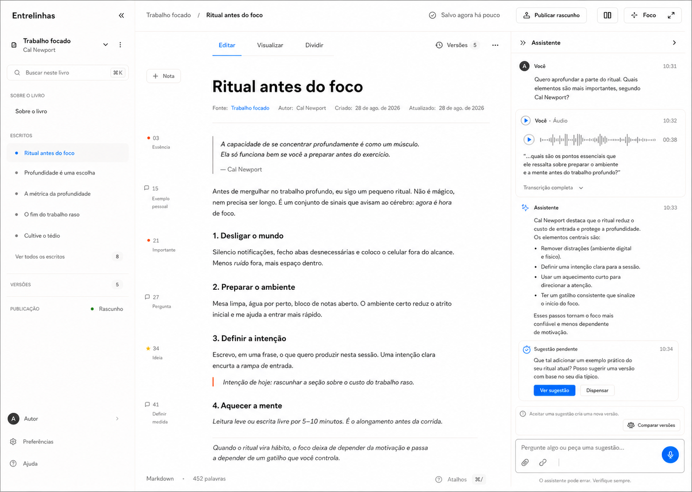

Versão refinada Selecionada
Documento com aproximadamente dois terços da área útil, contexto restrito ao livro ativo e uma única conversa multimodal recolhível.

Cada escrita é um ambiente isolado. O documento ocupa o centro e continua completamente utilizável quando biblioteca e assistente estão recolhidos.
Documento com aproximadamente dois terços da área útil, contexto restrito ao livro ativo e uma única conversa multimodal recolhível.
